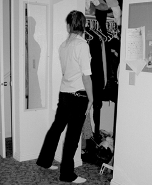

|
Women starving for an image
by Janielle Gurney
GUR01003@BYUI.EDU
Scroll Staff
 |
| A college age woman criticizes her body from another angle. Victims of eating disorders struggle with distorted perceptions of their bodies. Behavioral therapy and stress management are needed to treat most eating disorders. Carrie Garrett / Scroll |
|
“One more hour ... one more day.” This is the internal struggle eating disorder victims feel everyday in the battlefield of their own minds.
A disease that can begin with only a dissatisfaction of one’s body image affects one percent of the world’s population. This percentage might seem minute, but there are over 62 million people diagnosed with an eating disorder, according to the U.S. Census Bureau.
Anorexia nervosa and bulimia nervosa are the two main types of eating disorders that affect many young women and a few young men at a median age of 17, according to www.surgeongeneral.gov.
Anorexia is when someone deliberately starves him or herself to lose weight, and body weight is maintained at least 15 percent below what is expected for a person’s height, according to www.netdoctor.co.uk.
Sarah Stickney, a freshman from Manchester, N.H., started anorexia tendencies her sophomore year of high school. It all began when her school schedule did not have a time slot for lunch, she said.
Stickney recalled feeling depressed and often excluded from the social atmosphere in high school. She did, however, have good friends that became her support system as she overcame the disorder, she said.
Many people affected by anorexia set rules for themselves. They allow certain amounts of food for themselves, and regulate how much exercise is needed after eating certain amounts or kinds of food, according to www.netdoctor.co.uk.
Most victims of anorexia pursue a very low “ideal” weight, and may seek for weight loss until problems occur, including hormonal disturbances, osteoporosis, damage to the heart, liver, kidneys and brain, impedance in growth, depression, suicide, and for many, death according www.netdoctor.com.
Stickney overcame anorexia the summer before her senior year, and no longer struggles with anorexia, she said. People tell her constantly that she is small, but she said she does not feel like she needs to worry about it.
Bulimia is characterized as a pattern of binge eating, followed by purging the food. The purging is most commonly self-induced by laxatives, diet pills, extreme exercise or fasting, according to research performed by Reed Stoddard, a BYU-Idaho counselor.
 |
A young woman critiques her body in her room. Studies show that up to 7 percent of young women show signs of bulimia. More information about bulimia can be found at www.surgeongeneral.gov.
Carrie Garrett / Scroll |
|
Studies show that up to 7 percent of young women have symptoms of bulimia.
Bulimia generally starts from a dissatisfying body image, desire for control in life, dysfunctional families, or life traumas. Although many victims start to binge for more control, they end up with an out of control disease according to Stoddard’s research.
Bulimia differs from anorexia in that loss of weight may not often occur. This maintenance of normal body weight might make a victim react in both eating disorders. The diseases often coincide to produce the results a person is seeking for.
The mental and physical illness of eating disorders is diverse from other physical diseases since psychotherapy is needed to cure a victim, according to www.surgeongeneral.gov.
A combination of behavioral therapy, stress management, psychotherapy and pharmacotherapy are needed for treating most eating disorders. While there is treatment available, many victims choose not to use it and instead allow the disease to overtake their bodies according to www.surgeongeneral.gov.
“I was sick and tired of hurting and feeling miserable and weak,” Stickney said.
When it comes down to it, victims must decide for themselves to make the necessary changes for recovery, and do it.
|